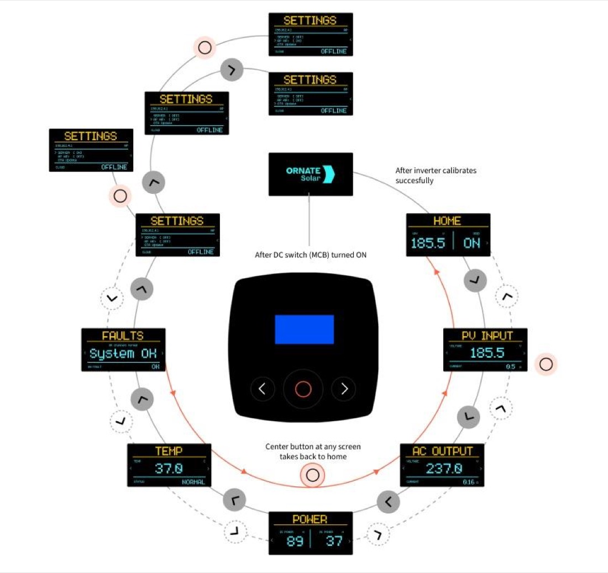
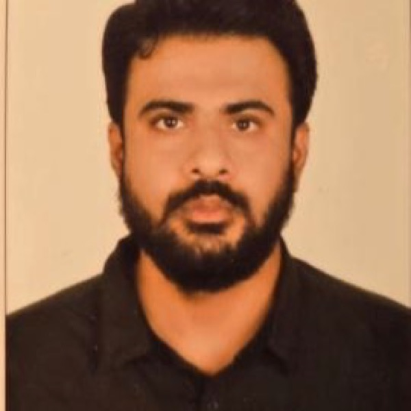
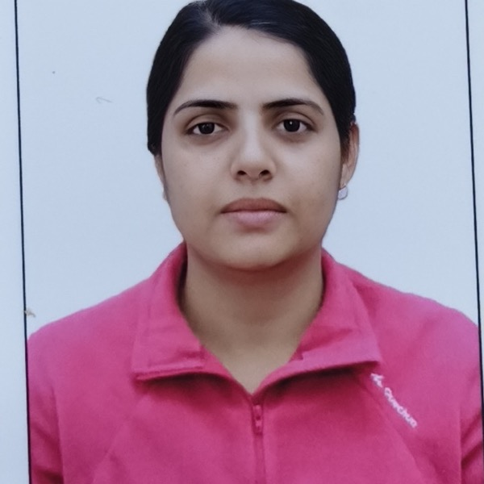
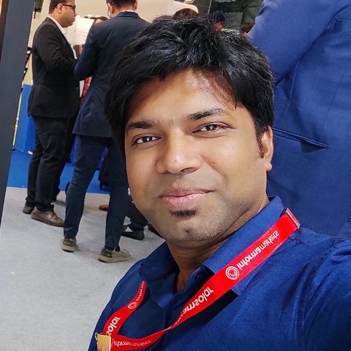
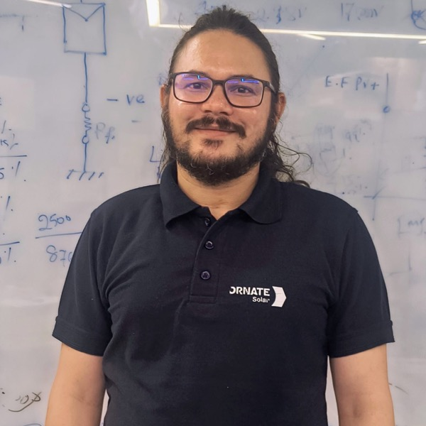
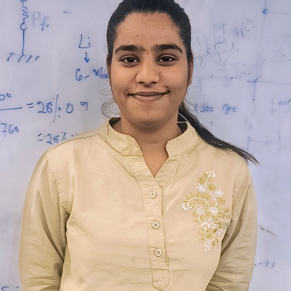

Power electronics
Topology design, gate drivers, magnetics, sensing and protection — the analog heart of every converter.
We design, build and validate the control technology inside every grid-interactive power system — DC–DC, AC–DC and DC–AC conversion. From PCB to firmware to field-proven product, engineered entirely in-house. One platform. Five national-priority product classes.


The Centre of Excellence carries a complete capability stack: from schematic and PCB design, through power conversion and control firmware, to thermal, test and validation. These are the domains we work across every day.
Topology design, gate drivers, magnetics, sensing and protection — the analog heart of every converter.
DC–DC, AC–DC and DC–AC stages with high-speed MPPT, PFC and grid-forming control built in firmware.
Bi-directional inverters and rectifiers — single- and three-phase, two-level to multi-level NPC/ANPC.
DC fast-charging front-ends, isolated DC/DC output stages and motor-control firmware for e-mobility.
Dual-input isolated SMPS, flyback and boost stages — written from scratch with full protection coordination.
Multi-layer power and control PCBs in Altium & KiCad — schematic, layout, bring-up and validation in-house.
Grid synchronisation, anti-islanding, PV-simulator MPPT validation and thermal characterisation to standard.
Real-time control on STM32 / C2000 DSP — PLL/SOGI, dq vector control, Modbus, MQTT and IoT telemetry.
We have developed an indigenous power conversion "India stack" — a reusable control architecture for all power electronics: DC–DC, AC–DC and DC–AC conversion. Roughly 70–80% of the value in a power converter lives in the firmware, not the commoditised power stage. We invested our scarce engineering capacity in exactly that layer — and made it portable across product classes.
Grid synchronisation, current control, protection and application logic — the defensible value sits in firmware that runs on MCU / DSP / DSC-class devices. We own it, end to end.
Solar inverters at every scale, BESS, EV fast charging, microgrids, solid-state transformers. One platform re-targets across all of them — instead of building a separate product for each.
Every product built on the stack stress-tests its control architecture under new conditions. Each cycle hardens the platform further — compounding that single-product strategies can never achieve.
The reusable layers are the firmware — high-value indigenous IP. The non-reusable layers are the hardware — re-engineered per power rating. Hover a layer to see where the value lives.
Layers 1–5 constitute 70–80% of development effort and almost all of the defensible IP. India must own this layer.
Every board below was designed, fabricated and tested by the Centre of Excellence — from the first hand-built inverter to integrated power stages, custom control cards and the instruments that prove them. Tap any image to enlarge.




Short films of board bring-up, assembly and on-bench testing in the Centre of Excellence. Drop your clips into assets/video/ and they appear here.
Every product below is a real instantiation of the platform. The 3 kW inverter is product-ready today; the rest are climbing the power-class ladder on the same control core.
Swatantra Series · The first product
Our first fully indigenous grid-tied inverter — concept to validated, market-ready product. Single-phase, non-isolated topology, integrated MPPT (100–500 V) and 0.99 power factor. Field-tested under real Indian grid conditions and submitted to BIS for type-testing under IS 16221.
HERIC topology · Single-phase
Transformer-less HERIC architecture for very high efficiency and ultra-low leakage current, with a dual-phase interleaved boost DC stage (180° phase-shifted) to cut input ripple and inductor stress.
Commercial & industrial scale
The next scaling milestone — full grid-tie synchronisation, anti-islanding and export limiting, on an advanced DSP control platform with real-time monitoring.
Battery-less VFD for PV pumping
A dedicated variable-frequency drive enabling direct PV-to-motor operation with no battery — real-time MPPT adjusts motor speed to available irradiance. Engineered for rugged rural deployment.
A phased model — from proof-of-concept to commercialisation — building capability and complexity progressively. The company became operational on 14 Feb 2023; the first hand-built inverter followed just five months later.
Lab founded at Ornate Solar; the research team assembles and DSIR recognition begins.
1–1.5 kW inverter built from scratch on a TI microcontroller. Grid-sync written from zero knowledge.
Lab recognised by the Department of Scientific & Industrial Research, Ministry of Science & Technology.
First large-scale prototype — pumped 1.5 kW into the real Delhi grid (not a simulator). Key thermal & control-loop insights gained.
Smaller, smarter, fully-integrated product-ready GTI. Phase 1 complete — submitted for BIS certification.
6 kW & solar pump controller in active development; 10 kW platform next. IP filing, MoUs and pilot deployments ahead.
Each is a distinct national-priority application. Each requires application-specific engineering on top of the shared control core — but the defensible IP is already built.
Residential to utility scale. The first product anchors residential; the same control core extends through C&I and large string with engineering uplift.
500 GW non-fossil target by 2030Bi-directional inverter-class equipment — the same control core extended with battery interface and SoC-aware logic.
41.65 GW / 208 GWh by 2030The front-end AC/DC stage is structurally identical to a bi-directional inverter — PLL, dq control and grid sync all reused.
PM E-DRIVE · 72,300 stationsSolar inverters with grid-forming control, battery interface and seamless transfer between grid-tied and islanded operation.
Rural · defence · telecom · C&IA power-electronics replacement for conventional transformers. Shares the bi-directional inverter core; an emerging category for grid modernisation.
Strategic grid-modernisation valueBecause India does not yet own the embedded control layer. Hardware is assembled domestically — the firmware inside is still imported. We are closing that gap.
Read the national case →Technical Director & CTO · Head of the Centre of Excellence
An IEEE Fellow with over 25 years of research experience, Dr. Bhattacharyya spent 27 years at Intel as a Principal Engineer — a key contributor to the 80386 and 80486 processors and a recipient of the Intel Founder's Award. Recognised at Intel by Craig Barrett, Pat Gelsinger and Chuck Steidel for his work on electrical characterisation of packages and pioneering iPest technology. He holds a Ph.D. from the State University of New York and an M.Sc. in Physics from IIT-Kanpur, and established Ornate Solar's R&D unit to advance India's National Semiconductor Mission.
A selection of Dr. Bhattacharyya's United States patents from his work on microprocessor packaging, power delivery and decoupling at Intel — the deep semiconductor foundation he now brings to indigenous power electronics.
A deep bench of power-electronics researchers, embedded engineers, designers and test specialists — including three PhDs and a PhD candidate from IIT Delhi, IIT Bombay, DTU and Thapar.





We work with universities, government bodies and industry to co-develop standards, file patents, and bring indigenous power electronics to real-world deployment. We are not a competitor to inverter manufacturers — we are a strategic partner helping them succeed with solutions tailored to Indian infrastructure.